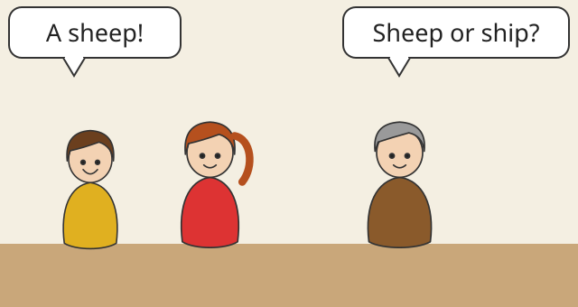

Kurz oder lang?
Mit einem KI-Tutor lernen
Ein KI-Tutor erklärt dir diese Seite und hilft dir bei den Aufgaben. Wähl deinen Assistenten:
Mit Claude öffnen Mit ChatGPT öffnen Mit Mistral Vibe öffnen
Du nutzt dein eigenes Konto beim Anbieter. Der Assistent ist kein Angebot von lernapps.net: lernapps liefert nur Inhalte und Aufgaben. Die Wahl gilt für alle Seiten, nur auf diesem Gerät.
Schaf oder Schiff?

Von links: Peter (gelbe Jacke) zeigt ein Foto, Ellie (roter Pferdeschwanz) schaut zu, rechts steht Mr Hill (graue Haare).
Quelle: eigene Zeichnung. Lizenz: CC-BY-4.0.Peter zeigt ein Foto vom Bauernhof und sagt: „A sheep!“ Mr Hill fragt: „Sheep or ship?“ Sheep heißt „Schaf“, ship heißt „Schiff“. Beide Wörter klingen fast gleich.
Aufgabe
Lösung
Der Vokal in der Mitte ist lang oder kurz. richtige Antwort
In sheep steht ee, in ship steht i. Der Vokal in sheep ist lang, der in ship kurz.
Der erste Laut ist verschieden.
Beide Wörter beginnen mit sh. Der erste Laut ist gleich.
Das Ende des Wortes ist verschieden.
Beide Wörter enden auf p. Das Ende ist gleich.
Nur der Vokal in der Mitte ist anders. Der kleine Unterschied ändert die Bedeutung.
Das kannst du danach: Du unterscheidest kurze und lange Vokale und die Vokale in cat und cut.
Ein Laut macht den Unterschied
Zwei Wörter, die sich nur in einem Laut unterscheiden, heißen Minimalpaar. Die Klangpartitur zeigt ship und sheep. Der Doppelpunkt ː macht einen Vokal lang.

Der Unterschied steckt im Vokal: ɪ ist kurz, iː ist lang.
Quelle: eigene Zeichnung. Lizenz: CC-BY-4.0.| Zeichen | Beispielwort | So klingt es ungefähr |
|---|---|---|
| /ɪ/ | ship | kurzes „i“ |
| /iː/ | sheep | langes „i“ |
| /ʊ/ | pull | kurzes „u“ |
| /uː/ | pool | langes „u“ |
| /æ/ | cat | offenes „ä“ |
| /ʌ/ | cut | kurzes, dunkles „a“ |
Merke
- Kurz oder lang: /ɪ/ und /ʊ/ sind kurz, /iː/ und /uː/ sind lang.
- Offen oder dunkel: In cat ist der Mund weit offen, in cut ist er weniger offen, und der Laut klingt dunkler.
- Der Unterschied zählt: Ein anderer Vokal macht ein anderes Wort.
Aufgabe
Höre vier Sätze und sprich sie nach. In jedem steckt ein Wort aus der Tabelle: sheep, ship, cat, cut.
Tipp
Die Aufnahme ist eine KI-Stimme und spricht manchmal unscharf. Frag im Zweifel deine Lehrkraft.
- Look, a sheep again.KI
- Look, a ship again.KI
- My cat is sleeping again.KI
- Please cut the bread today.KI
Zum Aufnehmen braucht diese Aufgabe JavaScript. Die Beispiele kannst du auch ohne anhören.
Lösung
- Look, a sheep again.
- Look, a ship again.
- My cat is sleeping again.
- Please cut the bread today.
Übung
Aufgabe
Lösung
Richtige Antwort: /iː/ – tea; /ɪ/ – fish; /uː/ – food; /ʌ/ – cup; /æ/ – man
Das Zeichen ː steht bei den langen Vokalen in tea und food.
Aufgabe
Lösung
seat richtige Antwort
Der Vokal /iː/ ist lang. Das Wort seat heißt „Sitz“.
sit
Sit hat das kurze /ɪ/ und klingt /sɪt/. Es heißt „sitzen“.
set
Set hat ein kurzes e und heißt „setzen“.
Das Zeichen iː zeigt den langen Vokal. Das Wort heißt seat.
Aufgabe
Schreibe das Wort, das in Lautschrift steht.
Tipp
Achte darauf, ob der Vokal ein ː hat.
- /bʊk/
- /bʌs/
- /miːt/
Lösung
- book
- bus
- meet
Aufgabe
Höre zu und schreibe jeden Satz ganz auf.
Tipp
Der Satz sagt dir, welches Wort gemeint ist. Höre den Satz so oft, wie du willst.
- KI
- KI
- KI
Lösung
- Sophie and Ellie live in a small village.
- Please leave the bag in the kitchen.
- The bag is full of apples today.
Sprich nach
Aufgabe
Höre den Satz und nimm dich auf. Höre dich an und bewerte dich selbst. Die App hört nicht zu.
Tipp
Achte auf den Unterschied zwischen kurzen und langen Vokalen.
- Ellie wants to sit on the seat again.KI
- Peter cut the apple in the kitchen.KI
- Sophie sees a sheep and a ship today.KI
Zum Aufnehmen braucht diese Aufgabe JavaScript. Die Beispiele kannst du auch ohne anhören.
Lösung
- Ellie wants to sit on the seat again.
- Peter cut the apple in the kitchen.
- Sophie sees a sheep and a ship today.
Wie es weitergeht
Mr Hill nickt: „Gut gehört.“ Sophie fällt etwas auf: Wenn sie Thank you sagt, klingt es noch deutsch. Welche anderen Laute Kinder aus Deutschland oft anders sprechen, hörst du auf der nächsten Seite.